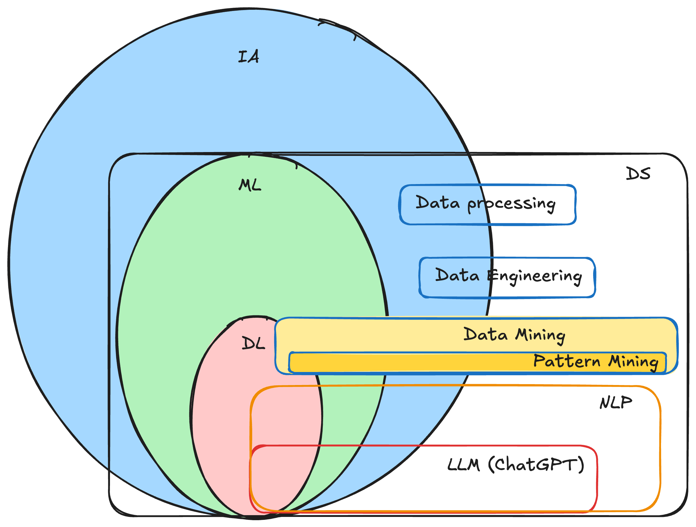

Chapitre 1 : Introduction au data mining
Le data mining (fouille de données) est la recherche/découverte de connaissances ou d’informations utiles, souvent cachées, dans les données.
Objectifs
À la fin de ce chapitre, vous devez pouvoir :
Définir donnée, information et data mining
Situer le DM par rapport à l’IA, au ML, au DL et à la science des données
Définir le pattern mining et ses variantes
Distinguer les grandes tâches : clustering, classification, régression, détection d’anomalies
Citer des applications
1. Donnée, information, connaissance
Donnée = unité d’information ; l’information est la partie utile de la donnée (la notion d’utilité est subjective : utile pour la prise de décision).
Faire du data mining, c’est extraire des informations (notamment cachées) des données, pour appuyer une décision (rentabilité, bien-être, etc.).
Science des données : la science qui permet d’étudier, traiter et utiliser les données comme base de décision. Sources : réseaux sociaux, IoT, sites web/API, enquêtes et bases de production, …
2. IA, ML, DL, DS
IA : un système capable de (1) simuler un raisonnement, (2) résoudre un problème, (3) s’adapter à son environnement (ex. ChatGPT, traduction automatique, voitures autonomes, rovers).
On situe usuellement : IA ⊃ ML ⊃ DL, la science des données recoupant ces domaines autour de la donnée.
{kind=link}

Positionnement de l’IA, du ML, du DL et de la science des données.
3. Data mining et pattern mining
Quand l’information recherchée se représente sous une forme formelle (ensemble, séquence, règle, graphe, …) — un pattern (motif) — on parle de pattern mining : la découverte de motifs (cachés) dans les données.
Si le pattern est… |
on parle de… |
exemple |
|---|---|---|
un ensemble |
Itemset Mining |
combinaisons de produits achetés ensemble |
une séquence |
Sequence Mining |
recettes de cuisine les plus suivies |
un graphe |
Graph Mining |
circuits les plus fréquentés par les touristes |
un arbre |
Tree Mining |
similitudes dans le code de plusieurs développeurs |
un épisode |
Episode Mining |
tendances périodiques (ex. cours des cryptomonnaies) |
4. Les grandes tâches du data mining
Tâche |
Idée |
|---|---|
Clustering |
Regrouper les observations similaires (apprentissage non supervisé) — chap5 |
Pattern mining |
Découvrir des motifs fréquents (itemsets, séquences…) — chap6, chap7 |
Classification |
Prédire une classe (variable discrète) — apprentissage supervisé |
Régression |
Prédire une valeur (variable continue) — apprentissage supervisé |
Détection d’anomalies / outliers |
Repérer les observations atypiques (fraude, pannes, valeurs aberrantes) |
Note
Ce cours met l’accent sur l’apprentissage non supervisé : le clustering et le pattern mining (itemsets, règles d’association, séquences).
5. Applications
Les applications sont nombreuses et variées : grande distribution (analyse du panier, recommandation, gestion des stocks), tourisme, santé publique, transport, analyse de texte, télécommunications, … (voir les projets).
Exercice
Pour un supermarché qui veut recommander des produits, restructurer ses rayons et gérer ses stocks : quelles tâches/algorithmes de data mining mobiliseriez-vous, et sur quelles données ?